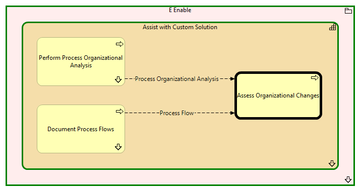

Assess Organizational Changes - Context
(
)

generated_by
build_archi_xml.py::gen_proc_node_context_view
generator_path
pedro/capabilities/build_archi_xml_assign/build_archi_xml_assign.py
run_at
2026-10-10T17:56:35
view_type
process_context
E Enable
Assist with Custom Solution
Perform Process Organizational Analysis
Perform Process Organizational Analysis - Context
Assess Organizational Changes
Document Process Flows
Document Process Flows - Context
Assist with Custom Solution - Processes
E Enable - Processes
Process Organizational Analysis
Perform Process Organizational Analysis
Assess Organizational Changes
Process Flow
Document Process Flows
Assess Organizational Changes